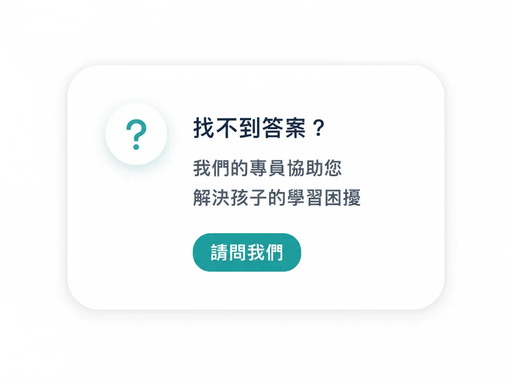
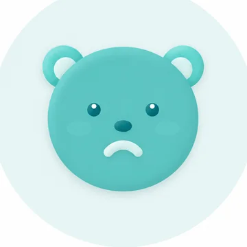
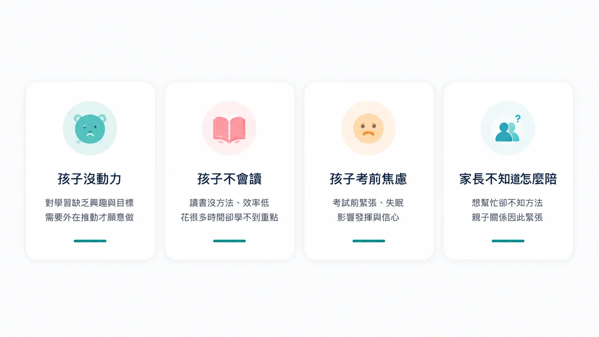

家長常見問題
快速找答案
從學習、方案到 AI 體檢，先找到最接近的疑問。

我們整理了家長最關心的學習、成績、108 課綱、課程與方案、AI 診斷與陪伴等常見問題，讓您快速找到清楚、實用的解答。
成績波動通常與學習方法、情緒狀態或基礎觀念不穩定有關。我們會透過 AI 學習診斷，找出影響表現的關鍵原因，並提供個人化的學習路徑與練習建議，協助孩子建立穩定的學習節奏與信心。
很多孩子不是沒有努力，而是補強方向沒有對準真正弱點。伴伴會先定位知識缺口，再把練習順序與每日任務排出來，讓時間用在最需要處理的地方。
108 課綱重視理解、應用、整合與表達。伴伴會把這些能力拆成可練習的任務，例如閱讀題意、整理資訊、推論關係與完整表達解題思路。
適合。很多孩子不是不願意學，而是不知道怎麼開始。教練會把任務拆小、提醒節奏、回饋進步，先幫孩子建立「每天做得到」的開始感。
可以避免一開始就盲目選課。診斷會整理孩子的程度、錯因與習慣，讓家長知道需要的是節奏陪伴、弱點突破，還是先建立每日學習任務。
伴伴不是把學校內容再講一次，而是補足孩子在學校學習後沒有被看見的斷點，並把學習任務整理成可持續執行的路線。
會依孩子與家庭狀態安排合適的陪伴方式。重點不是形式，而是讓孩子有穩定任務、清楚回饋與持續追蹤。
報告會整理掌握度、知識缺口、錯因與學習行為，並給出優先補強建議。家長可以用報告看懂孩子目前卡點，不再只靠考試分數猜原因。
可以。伴伴會透過週報與教練回饋持續觀察孩子狀態，必要時調整任務量、練習重點或陪伴方式。
建議先做 15 分鐘 AI 體檢，了解孩子狀態後再由顧問說明合適的陪伴方式與下一步安排。
陪伴孩子的路上，您並不孤單，讓我們一起找到方向。

孩子沒動力對學習缺乏明確目標，需要先在挫折前看見成就。
讀書方法、效率低，花很多時間卻抓不到重點。
考試前緊張、失眠，影響表現與自信心。
想幫忙卻不知道方法，親子關係因此緊張。

立即預約免費 15 分鐘 AI 診斷，掌握孩子學習現況與建議路線。